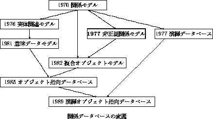

|
|
Kappaのホームページにようこそ |
English |
Kappaでは、非正規関係(nested relation or NF2)をデータモデルとして採用 しています。知識情報処理では、分子生物学データベースのように、階層構造 や繰り返しを持つデータを扱わねばならず、非正規関係は、正規関係に比べ、 そのようなデータを効率良く記憶し、処理することができるためです。これは、 関係の数が少なく、関係間の結合演算も減少するからです。
また、Kappaの並列分散処理機能は、指数関数的に増大するデータベースの検 索高速化に役立つものと思われます。
次の図は、関係モデルに始まるデータベース（データモデル）の歴史を示した
ものです。参考文献の書籍1.図3.8.2をもとに作成させて頂きました。図の中
の数字は、発表年代です。
非正規関係モデルは、比較的早い時期に提案されたものであることが分かります。
図の中で最新の、演繹オブジェクト指向データベースについては、
Quixoteのページを参照して下さい。
